ภาพรวมบทนี้: สัปดาห์ 14 ของวิชาเปลี่ยนจาก Linux มาเป็น การบริหารระบบปฏิบัติการ Windows เนื้อหาไล่จากพื้นฐาน (ประวัติรุ่น, boot manager) ไปที่ สถาปัตยกรรม (user mode / kernel mode, Windows NT) แล้วลงลึกที่ file system 2 ตระกูล คือ FAT (เก็บไฟล์เป็นสายโซ่ cluster) กับ NTFS (มี PBS, MFT, MFT mirror, log file, meta files) ต่อด้วย Windows Registry (ฐานข้อมูลการตั้งค่าแบบลำดับชั้น) และจบด้วยงาน admin จริง 3 อย่าง: สร้าง user, ตั้ง permission ไฟล์/โฟลเดอร์ 6 แบบ และ ดู/kill process ด้วย Task Manager
ภาค Lab ให้ลงมือทำตามสไลด์ทั้งหมด เก็บผลเป็น PDF ไฟล์เดียวส่ง MyCourses
มีตัวเลขที่ต้องเข้าใจ: จำนวน cluster ของ FAT16 (16 bit → 65,536), การไล่สายโซ่ใน FAT, ตาราง offset ของ boot sector (รวม 512 bytes) — ไม่มีโค้ดหรือคำสั่ง PowerShell/cmd ในสไลด์ ทุกงานทำผ่าน GUI
📌 เลขสไลด์ในสรุปนี้ = เลขหน้า PDF ซึ่งตรงกับเลขที่พิมพ์มุมขวาล่างของสไลด์ · Lecture มี 37 หน้า · Lab มี 4 หน้า
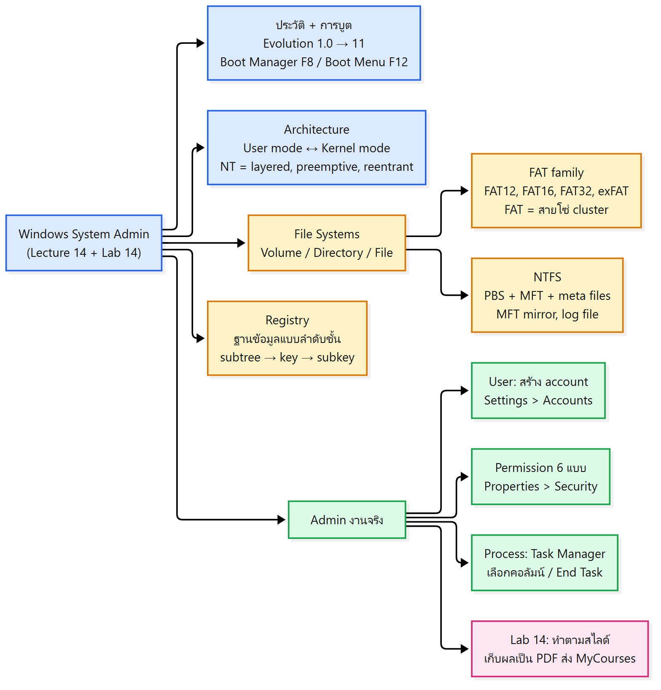
สารบัญ
ภาค Lecture
- บทนี้อยู่ตรงไหนของวิชา และตั้งเป้าเรียนอะไร?
- Windows มีรุ่นอะไรบ้าง ออกปีไหน?
- Boot Manager, Boot loader และ F12 Boot Menu คืออะไร?
- สถาปัตยกรรมของ Windows แบ่งชั้นยังไง?
- หน้าต่างโปรแกรม (Windows Components) มีส่วนอะไรบ้าง?
- Volume, Directory, File ต่างกันยังไง และมุมมองผู้ใช้ Linux กับ Windows ต่างกันยังไง?
- Windows มี file system อะไรบ้าง และ FAT32 / NTFS / exFAT ต่างกันยังไง?
- FAT เก็บไฟล์ยังไง? (สายโซ่ cluster)
- Disk Management แสดงข้อมูลอะไร?
- NTFS มีโครงสร้างอะไรบ้าง?
- Partition Boot Sector (PBS) เก็บอะไร?
- MFT ทำงานยังไง และกันข้อมูลเสียยังไง?
- NTFS metadata / system files คืออะไร?
- Windows Registry คืออะไร มีโครงสร้างยังไง?
- สร้าง user account ใน Windows ยังไง?
- Permission ของไฟล์/โฟลเดอร์มีกี่แบบ และตั้งยังไง?
- ดูและ kill process ใน Windows ยังไง?
ภาค Lab
- Lab 14 ต้องทำอะไร และส่งอะไร?
ท้ายบท: คำศัพท์สำคัญ · จุดที่มักออกสอบ · คู่ที่มักสับสน
ภาค Lecture
1. บทนี้อยู่ตรงไหนของวิชา และตั้งเป้าเรียนอะไร? (Lecture สไลด์ 1–4)
แก่นสัปดาห์ 14 = "การบริหารจัดการระบบปฏิบัติการวินโดว์" เป้าคือรู้จัก architecture, file system, registry แล้วทำ admin ได้ 3 ด้าน: user, file system, process
- สไลด์ 1 – ITDS212 Computer System Lab #14 Windows System Admin, Faculty of ICT มหิดล, วันที่ November 12, 2026
- สไลด์ 2 (Tentative Schedule) – ตารางทั้งเทอม บทนี้คือข้อ 14 ต่อจากข้อ 13 (บริหารจัดการ Linux) และก่อนข้อ 15 (System monitoring)
| สัปดาห์ | หัวข้อ | สัปดาห์ | หัวข้อ |
|---|---|---|---|
| 1 | ติดตั้ง VM + Ubuntu, login | 9 | คำสั่งจัดการสภาพแวดล้อม |
| 2 | โครงสร้าง Linux + คำสั่งเบื้องต้น | 10 | เขียน shell script |
| 3 | จัดการแฟ้มข้อมูล | 11 | โปรแกรมจัดการ process และ thread |
| 4 | จัดการผู้ใช้และกลุ่ม | 12 | ติดตั้ง Apache, MySQL, PHP |
| 5 | สิทธิ์ของผู้ใช้ | 13 | บริหารจัดการ Linux |
| 6 | nano และ vim | 14 | บริหารจัดการ Windows |
| 7 | จัดการ storage | 15 | System monitoring |
| 8 | process และ memory |
- สไลด์ 3 (Objectives) – เรียน 4 เรื่อง
- Windows Architecture – OS แบ่งเป็นชั้นอะไรบ้าง
- Windows File Systems – FAT / NTFS เก็บไฟล์ยังไง
- Windows Registry – ที่เก็บการตั้งค่าของระบบ
- การ admin Windows OS – แยกเป็น User management, File System management, Process management
- สไลด์ 4 (Outline) – Windows Evolution → Windows Boot Manager → Windows Architecture → Windows File Systems → Windows User Management
💡 เทียบกับ Linux ที่เรียนมา: user management ≈ L4, permission ≈ L5, storage ≈ L7, process ≈ L8 — บทนี้คือทำเรื่องเดิมบน Windows ผ่าน GUI
2. Windows มีรุ่นอะไรบ้าง ออกปีไหน? (Lecture สไลด์ 5)
แก่นจาก Windows 1.0 (Nov 1985) ถึง Windows 11 (October 2021) รวม 13 รุ่นตามสไลด์
| รุ่น | ออกเมื่อ | รุ่น | ออกเมื่อ |
|---|---|---|---|
| Windows 1.0 | Nov 1985 | Windows Vista | Nov 2006 |
| Windows 2.0 | Dec 1987 | Windows 7 | July 2009 |
| Windows 3.0 | May 1990 | Windows 8.0 | Oct 2012 |
| Windows 95 | Aug 1995 | Windows 8.1 | Oct 2013 |
| Windows 98 | June 1998 | Windows 10 | July 2015 |
| Windows ME | Sep 2000 | Windows 11 | October 2021 |
| Windows XP | Oct 2001 |
💡 จำเป็นช่วง: ยุค 80 (1.0, 2.0) → 90 (3.0, 95, 98) → 2000s (ME, XP, Vista) → 2009–2013 (7, 8.0, 8.1) → 10 (2015) → 11 (2021)
3. Boot Manager, Boot loader และ F12 Boot Menu คืออะไร? (Lecture สไลด์ 6)
แก่นboot loader (= boot manager) คือโปรแกรมเล็ก ๆ ที่โหลด OS เข้า memory · เข้า Windows Boot Manager ด้วย F8 ตอนเปิดเครื่อง · เลือกอุปกรณ์ที่จะบูตด้วย F12 ระหว่าง POST
| เรื่อง | รายละเอียดตามสไลด์ |
|---|---|
| Windows Boot Manager | ในคอมส่วนใหญ่ เข้าได้ด้วยการกด F8 ทันทีที่เครื่องเริ่มทำงาน |
| Boot loader (หรือ boot manager) | โปรแกรมเล็ก ๆ ที่วาง (โหลด) OS ของเครื่องเข้าไปใน memory |
| F12 Boot Menu | ให้ เลือกอุปกรณ์ที่จะใช้บูต OS โดยกด F12 ระหว่าง POST (Power On Self Test) |
- รูปในสไลด์คือหน้าจอ Boot Menu มีตัวเลือก 1. Removable Devices 2. Hard Drive 3. CD-ROM Drive 4. Network boot from Intel E1000 และ
<Enter Setup>
⚠️ อย่าสลับปุ่ม: F8 = Windows Boot Manager · F12 = Boot Menu (เลือกอุปกรณ์บูต) ระหว่าง POST
4. สถาปัตยกรรมของ Windows แบ่งชั้นยังไง? (Lecture สไลด์ 7, 15)
แก่นWindows แบ่งเป็น 2 โหมดใหญ่ — user mode (โปรแกรม, subsystem, DLL) กับ kernel mode (executive/manager ต่าง ๆ, kernel, driver, HAL) โดย HAL เป็นชั้นล่างสุดที่คุยกับ hardware
สไลด์ 15 (Windows NT Architecture) ในไฟล์วางคั่นอยู่กลางเรื่อง file system แต่สรุปรวมไว้ตรงนี้เพราะเป็นเรื่อง architecture เหมือนกัน
4.1 รูปซ้ายของสไลด์ 7: Windows Architecture (© Microsoft Corporation 2006, v3)
แก่นเส้นหนาแบ่ง user-mode ด้านบน กับ kernel-mode ด้านล่าง ชั้นบนสุดคือ Applications ชั้นล่างสุดคือ Kernel run-time / Hardware Abstraction Layer
รูปเป็นกล่องซ้อนเป็นชั้น (บน → ล่าง):
| ฝั่ง | ชั้น | กล่องในชั้นนั้น |
|---|---|---|
| User-mode | บนสุด | Applications |
| ชั้นกลาง | Subsystem servers (ด้านซ้าย), DLLs, System Services, Login/GINA | |
| Kernel32, Critical services, User32 / GDI | ||
| ล่างสุดของ user-mode | ntdll / run-time library | |
| Kernel-mode | บนสุดของ kernel | Trap interface / LPC |
| ส่วนประกอบหลัก | Security refmon, I/O Manager, Memory Manager, Procs & threads, Win32 GUI | |
| ส่วนย่อย | Net devices, Net protocols, Net Interfaces, Device stacks · File filters, File systems, Volume mgrs · Filesys run-time, Cache mgr · Scheduler, Synchronization | |
| เกือบล่าง | Object Manager / Configuration Management (registry) | |
| ล่างสุด | Kernel run-time / Hardware Abstraction Layer |
⚠️ สไลด์ 7 สะกด "Memory Manger" — คือ Memory Manager
4.2 รูปขวาของสไลด์ 7: Windows รุ่นใหม่ที่มี Hyper-V
แก่นทุกอย่างใน user mode (subsystem, system process, service, application) ผ่าน NTDLL.DLL แล้วข้ามเส้นเข้า kernel mode ที่ System Service Dispatcher ลงไปถึง Kernel, HAL และมี Hyper-V Hypervisor อยู่ใต้สุด
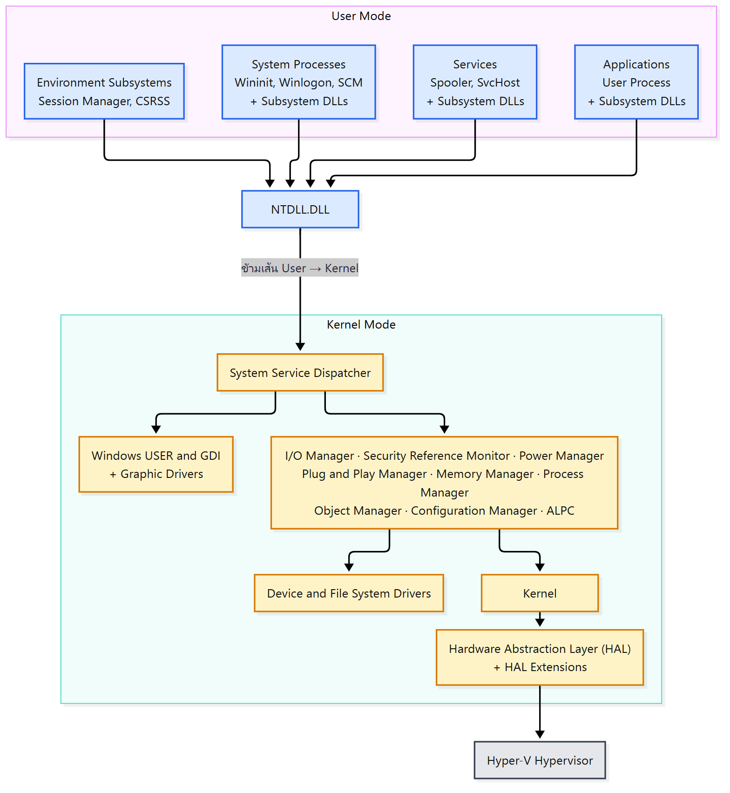
- User Mode มี 4 กลุ่ม
- Environment Subsystems – Session Manager, CSRSS
- System Processes – Wininit, Winlogon, SCM (แต่ละตัวมี Subsystem DLLs)
- Services – Spooler, SvcHost (มี Subsystem DLLs)
- Applications – User Process (มี Subsystem DLLs)
- ทั้งหมดชี้ลงไปที่ NTDLL.DLL ซึ่งเป็นแถบล่างสุดของ user mode
- Kernel Mode (ใต้เส้นแดง)
- System Service Dispatcher – จุดแรกที่รับการเรียกจาก user mode
- ชั้นของ manager: I/O Manager, Security Reference Monitor, Power Manager, Plug and Play Manager, Memory Manager, Process Manager, Object Manager, Configuration Manager, ALPC
- Windows USER and GDI + Graphic Drivers (ด้านขวา)
- Device and File System Drivers (ด้านซ้ายล่าง), Kernel
- Hardware Abstraction Layer (HAL) + HAL Extensions
- ใต้เส้นแดงเส้นล่าง: Hyper-V Hypervisor
ℹ️ ในสไลด์ ส่วนของ kernel mode วาดเป็นชั้นซ้อนกัน ลูกศรภายใน kernel mode ในรูปวาดใหม่ใช้แทน "ชั้นบน → ชั้นล่าง" เท่านั้น
4.3 Windows NT Architecture
แก่นWindows NT เป็น layered design มี 2 ส่วนหลักคือ user mode กับ kernel mode เป็น OS แบบ multitasking ที่ preemptive และ reentrant ใช้ได้ทั้งเครื่อง CPU เดียวและหลาย CPU
ข้อความในสไลด์:
- The architecture of Windows NT is a layered design ที่มี 2 องค์ประกอบหลัก: user mode และ kernel mode
- เป็น preemptive, reentrant multitasking OS ออกแบบให้ทำงานได้กับเครื่อง uniprocessor และ multiprocessor
- ที่มา: en.wikipedia.org/wiki/Architecture_of_Windows_NT
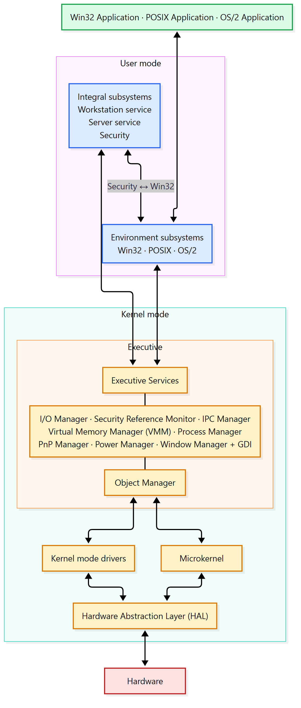
| ชั้น | ส่วนประกอบในรูป |
|---|---|
| โปรแกรมด้านบน | Win32 Application, POSIX Application, OS/2 Application (แต่ละตัวต่อกับ subsystem ชื่อเดียวกัน) |
| User mode – Integral subsystems | Work-station service, Server service, Security |
| User mode – Environment subsystems | Win32, POSIX, OS/2 (มีลูกศรระหว่าง Win32 กับ POSIX และ OS/2 และลูกศรระหว่าง Security ↔ Win32) |
| Kernel mode – Executive | Executive Services → I/O Manager, Security Reference Monitor, IPC Manager, Virtual Memory Manager (VMM), Process Manager, PnP Manager, Power Manager, Window Manager + GDI → Object Manager |
| Kernel mode – ชั้นล่าง | Kernel mode drivers, Microkernel |
| Kernel mode – ล่างสุด | Hardware Abstraction Layer (HAL) |
| ใต้ kernel | Hardware |
💡 เปรียบเหมือนอาคาร: user mode คือชั้นที่ลูกค้าเดินได้ kernel mode คือห้องเครื่องที่เฉพาะเจ้าหน้าที่เข้าได้ ส่วน HAL คือแผงต่อสายที่เชื่อมห้องเครื่องเข้ากับระบบไฟจริง (hardware)
5. หน้าต่างโปรแกรม (Windows Components) มีส่วนอะไรบ้าง? (Lecture สไลด์ 8)
แก่นหน้าต่างหนึ่งบาน (ตัวอย่าง "About Windows") มี 10 ส่วนที่สไลด์ชี้ชื่อไว้
| ส่วน | อยู่ตรงไหนในรูป |
|---|---|
| Application icon | มุมซ้ายบนของแถบชื่อ |
| Title bar | แถบบนสุดที่มีชื่อ "About Windows" |
| Minimize button | ปุ่ม _ มุมขวาบน |
| Maximize button | ปุ่มสี่เหลี่ยม มุมขวาบน |
| Close button | ปุ่ม X มุมขวาบน |
| Menu bar | แถบ File / Edit / View |
| Client area | พื้นที่ว่างตรงกลาง (ที่แสดงเนื้อหา) |
| Vertical scroll bar | แถบเลื่อนแนวตั้งด้านขวา |
| Horizontal scroll bar | แถบเลื่อนแนวนอนด้านล่าง |
| Sizing border | ขอบหน้าต่างที่ลากเพื่อปรับขนาด |
⚠️ สไลด์สะกด "Mazimize button" — คือ Maximize button
6. Volume, Directory, File ต่างกันยังไง และมุมมองผู้ใช้ Linux กับ Windows ต่างกันยังไง? (Lecture สไลด์ 9–10)
แก่นvolume = กลุ่มของ directory + file · directory = กลุ่มแบบลำดับชั้นของ directory + file · file = กลุ่มข้อมูลที่เกี่ยวข้องกัน
6.1 นิยาม 3 คำ
| คำ | นิยามตามสไลด์ | อธิบาย |
|---|---|---|
| Volume | a collection of directories and files | ใหญ่สุด เช่นไดรฟ์หนึ่งลูกที่รวมทุกอย่างไว้ |
| Directory | a hierarchical collection of directories and files | โฟลเดอร์ ซ้อนกันเป็นชั้นได้ |
| File | a logical grouping of related data | หน่วยเก็บข้อมูลจริง |
💡 เปรียบเหมือนตู้เอกสาร: volume = ตู้ทั้งตู้, directory = ลิ้นชัก/แฟ้ม (ซ้อนแฟ้มในแฟ้มได้), file = เอกสารแต่ละฉบับ
6.2 User's View: Linux vs Windows
สไลด์วางภาพหน้าต่างจัดการไฟล์ 2 ระบบเทียบกัน:
| Linux (file manager) | Windows (File Explorer) | |
|---|---|---|
| แถบซ้าย | Recent, Starred, Home, Documents, Downloads, Music, Pictures, Videos, Trash, Other Locations | Favorites (Desktop, Downloads, Recent places), This PC (Desktop, Documents, Downloads, Music, Pictures, Videos, Local Disk (C:), CD Drive (D:)), Network |
| ที่กำลังเปิด | ราก (root) ของระบบ: bin, boot, dev, etc, home, lib, lib64, media, mnt, opt, proc, root, run, sbin, srv, sys, tmp, usr, var (และไฟล์ @System.solv) | This PC › Local Disk (C:): PerfLogs, Program Files, Program Files (x86), Users, Windows (5 items) |
💡 จากรูป: Linux เปิดดูทุกอย่างจากรากเดียว (โฟลเดอร์ระบบอย่าง bin, etc, home อยู่ระดับบนสุด) ส่วน Windows แสดงเป็น ไดรฟ์ที่มีตัวอักษร (C:, D:) แล้วค่อยมีโฟลเดอร์ระบบ (Windows, Program Files, Users) อยู่ข้างในไดรฟ์
7. Windows มี file system อะไรบ้าง และ FAT32 / NTFS / exFAT ต่างกันยังไง? (Lecture สไลด์ 11–12)
แก่นFAT พัฒนาโดย Microsoft ปี 1977 ตระกูล FAT = FAT12, FAT16, FAT32, exFAT · ตารางเทียบ: FAT32 เข้ากันได้กว้างสุดแต่จำกัด volume 32GB / ไฟล์ 4GB, NTFS มี auto repair + compression, exFAT รองรับขนาดใหญ่มาก
7.1 ข้อความสไลด์ 11
- Windows offers three file systems: NTFS, FAT32 and FAT16
- FAT (File Allocation Table) was developed by Microsoft in 1977
- The family of FAT file systems includes FAT12, FAT16, FAT32 and exFAT
- รูป FAT FILE SYSTEM: เรียงเป็นช่อง Boot Sector → File Allocation Table → Root Directory → Directory → Cluster ... มีลูกศรจาก Directory ชี้กลับไปที่ File Allocation Table และลูกศรกระโดดต่อกันไประหว่าง cluster จนถึงช่อง EOF (รายละเอียดการต่อสายดูข้อ 8)
⚠️ สไลด์ 11 บอกว่า Windows มี 3 file system คือ NTFS, FAT32, FAT16 แต่ตารางสไลด์ 12 เทียบ FAT32, NTFS, exFAT — ถ้าข้อสอบถาม "Windows offers three file systems" ให้ตอบตามสไลด์ 11 ถ้าถามจากตารางเทียบให้ใช้สไลด์ 12
7.2 File System Comparison
| หัวข้อ | FAT32 | NTFS | exFAT |
|---|---|---|---|
| Compatibility | All Windows versions, macOS, Linux, videogame consoles (PlayStation 3 & 4), media players, Android, iPhone และอุปกรณ์อื่น | All Windows versions, Mac OS X (read-only access), Linux | All Windows versions, videogame consoles (PlayStation 4 & 5) |
| Max Volume Size | 32GB | 16TB | 128 PB (512 TB recommended) |
| Max File Size | 4GB | 16TB | 128 PB (theoretical 16 EB – 1 byte) |
| Cluster Size | 4 KB to 32 KB | 4 KB | 32MB |
| Fault Tolerance | No | Auto repair | Yes, if TFAT activated |
| Conversion | Possible | Not Allowed | Not available |
| Compression | No | Yes | No |
| Performance | High on small volumes, Low on large | Low on small volumes, High on large | High |
💡 จำแบบเรื่องเล่า: FAT32 = ตัวเก่าที่ "ทุกเครื่องอ่านได้" แต่ไฟล์ใหญ่เกิน 4GB ใส่ไม่ได้ · NTFS = ตัวหลักของ Windows ซ่อมตัวเองได้ บีบอัดได้ แต่ Mac อ่านได้อย่างเดียว · exFAT = รองรับขนาดมหาศาล
8. FAT เก็บไฟล์ยังไง? (สายโซ่ cluster) (Lecture สไลด์ 13–14)
แก่นdirectory entry เก็บชื่อไฟล์ ขนาด และเลข cluster แรก ส่วนตาราง FAT ช่องที่ N บอกว่า cluster ถัดจาก N คือเบอร์อะไร ไล่ต่อกันไปจนเจอ EOF — cluster ของไฟล์ไม่จำเป็นต้องติดกัน
8.1 FAT16 ใช้เลข 16 bit
- The FAT16 file system uses a 16-bit number to identify each allocation unit (called cluster) → ได้ทั้งหมด 65.536 clusters
- ตรวจ: 2¹⁶ = 65,536 ✔
⚠️ สไลด์เขียน "65**.**536" — จุดตรงนี้คือ ตัวคั่นหลักพัน (แบบยุโรป) หมายถึง 65,536 ไม่ใช่ 65.5
8.2 ตัวอย่าง file.txt ใน FAT16
ข้อมูลในรูป:
- ดิสก์เรียงเป็น boot sector → FAT → root directory → clusters
- Root directory มี entry:
file.txt ... 20000 ... 50→ "Directory entry contains file size and number of the first cluster in the file." (ขนาด 20000, cluster แรก = 50) - สมมติ: file.txt ใช้ cluster 50, 51, 52, 160, 130 และดิสก์แบ่งเป็น cluster ขนาด 4k
- ตาราง FAT:
50: 51·51: 52·52: 160· ... ·130: EOF· ... ·160: 130
ไล่สายโซ่ทีละขั้น:
- อ่าน root directory → file.txt เริ่มที่ cluster 50
- ดู FAT ช่อง 50 → ได้ 51 (cluster ถัดไป)
- FAT ช่อง 51 → 52
- FAT ช่อง 52 → 160 (กระโดดไกล ไม่ต้องติดกัน)
- FAT ช่อง 160 → 130 (ย้อนกลับมาเลขน้อยกว่าก็ได้)
- FAT ช่อง 130 → EOF = จบไฟล์
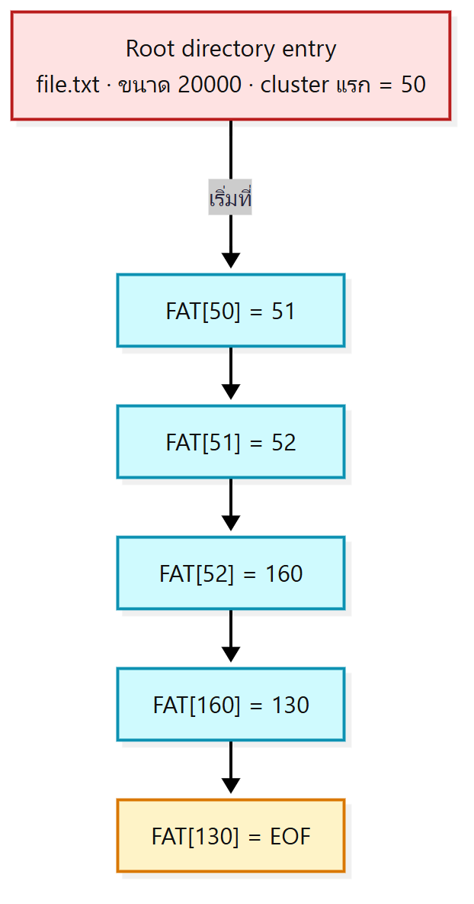
- ตรวจจำนวน cluster: 20000 ÷ 4096 ≈ 4.88 → ต้องใช้ 5 cluster ตรงกับที่สไลด์บอกว่าใช้ 5 cluster (50, 51, 52, 160, 130) ✔
💡 เปรียบเหมือนล่าสมบัติ: ป้ายแรก (directory entry) บอกว่าไปจุดที่ 50 ที่จุด 50 มีกระดาษเขียนว่า "ไปต่อที่ 51" ... จนถึงจุดที่เขียนว่า "จบ (EOF)"
8.3 อีก 2 ตัวอย่างในสไลด์ 14
รูปบน: Directory entry มี 3 ช่อง File name / File size / Starting cluster address → File.dat | 10000 Bytes | Cluster 16
- FAT: ช่อง 16 = 17, ช่อง 17 = 18, ช่อง 18 = 19, ช่อง 19 = 20, ช่อง 20 = EOF
- แต่ละช่องของ FAT ชี้ไปที่ Cluster 16–20 ที่เก็บ File data จริง
- → File.dat ใช้ cluster 16, 17, 18, 19, 20 (5 cluster ต่อเนื่องกัน)
รูปล่าง (File directory entries): 3 ไฟล์ใช้ตาราง FAT เดียวกัน (ช่อง 2–9)
| ช่อง FAT | 2 | 3 | 4 | 5 | 6 | 7 | 8 | 9 |
|---|---|---|---|---|---|---|---|---|
| ค่าในช่อง | 0003 | 0004 | FFFF | 0006 | 0008 | FFFF | FFFF | 0000 |
| ไฟล์ | cluster แรก (จาก entry) | ไล่สาย | cluster ที่ใช้ |
|---|---|---|---|
| FILE1 | 0002 | 2 → 3 → 4 (FFFF) | 2, 3, 4 |
| FILE2 | 0005 | 5 → 6 → 8 (FFFF) | 5, 6, 8 (ข้าม 7) |
| FILE3 | 0007 | 7 (FFFF) | 7 |
- FFFF อยู่ท้ายสายทุกไฟล์ ทำหน้าที่เดียวกับ EOF ในรูปบน
- ช่อง 9 มีค่า 0000 และไม่มีไฟล์ไหนชี้มา (สไลด์ไม่ได้อธิบายความหมายของ 0000)
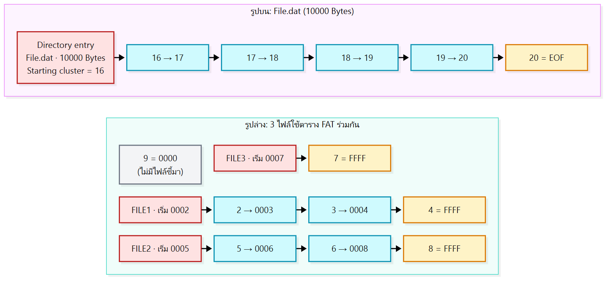
⚠️ จุดที่มักพลาด: ค่าในช่อง N คือ "cluster ถัดไป" ไม่ใช่ข้อมูลของไฟล์ เช่น FAT[6] = 0008 แปลว่าหลัง cluster 6 ไปต่อที่ cluster 8 (ไม่ใช่ 7)
9. Disk Management แสดงข้อมูลอะไร? (Lecture สไลด์ 16)
แก่นDisk Management แสดงทุก volume (layout, type, file system, status, capacity, free space) และแสดงแต่ละดิสก์แยกเป็น partition
รูปเป็นหน้าต่าง Disk Management (เมนู File / Action / View / Help):
ตารางด้านบน (ทุก volume)
| Volume | Layout | Type | File System | Status | Capacity | Free Space | % Free |
|---|---|---|---|---|---|---|---|
| (C:) | Simple | Basic | NTFS | Healthy (B...) | 118.02 GB | 54.50 GB | 46 % |
| (D:) | Simple | Basic | NTFS | Healthy (P...) | 931.50 GB | 436.74 GB | 47 % |
| (Disk 1 partition 1) | Simple | Basic | – | Healthy (E...) | 500 MB | 500 MB | 100 % |
| (Disk 1 partition 5) | Simple | Basic | – | Healthy (R...) | 637 MB | 637 MB | 100 % |
ด้านล่าง (แยกตามดิสก์)
| ดิสก์ | ข้อมูล | partition |
|---|---|---|
| Disk 0 | Basic, 931.50 GB, Online | (D:) 931.50 GB NTFS – Healthy (Page File, Basic Data Partition) |
| Disk 1 | Basic, 119.23 GB, Online | 500 MB – Healthy (EFI System Partition) · 100 MB · (C:) 118.02 GB NTFS – Healthy (Boot, Crash Dump, Basic Data Partition) · 637 MB – Healthy (Recovery Partition) |
- คำอธิบายสีด้านล่าง: Unallocated (ดำ), Primary partition (น้ำเงิน)
- ตรวจตัวเลขในรูป: % Free ของ C: = 54.50 ÷ 118.02 ≈ 46% ✔ · D: = 436.74 ÷ 931.50 ≈ 47% ✔
- สถานะย่อ "Healthy (B...)" ของ C: และ "Healthy (R...)" ของ partition 5 ตรงกับคำเต็มด้านล่าง (Boot..., Recovery Partition)
💡 เทียบ L7 (Storage บน Linux): หน้านี้คือ "lsblk / df ในแบบ GUI" ของ Windows — ดูดิสก์ partition file system และพื้นที่ว่างได้ในหน้าเดียว
10. NTFS มีโครงสร้างอะไรบ้าง? (Lecture สไลด์ 17–18)
แก่นNTFS (New Technology File System) มีหัวใจคือ Master File Table (MFT) และเก็บสำเนาส่วนสำคัญของ MFT หลายชุดกันข้อมูลเสีย · ประกอบด้วย PBS, MFT และ meta files
10.1 MFT คือโครงสร้างศูนย์กลาง
- The central system structure of the NTFS file system is the master file table (MFT).
- NTFS keeps multiple copies of the critical portion of the MFT to protect against corruption and data loss
- รูป Figure 1: MFT layout structure (ไล่จากบนลงล่าง):
- Partition 1 on the digital electronic storage devices → ข้างในคือ NTFS File System → แบ่งเป็น Sectors
- ขยายออกมาเป็น MFT Entry หนึ่งแถว ซึ่งมีส่วน: MFT Entry Header, MFT Attributes Header, MFT Attributes Content (หลายช่อง) และ Unused Space (ท้าย entry)
⚠️ ในรูปสไลด์ 17 สะกด "MTF Attributes Header" — คือ MFT Attributes Header
10.2 ส่วนประกอบของ NTFS
NTFS consists of several components:
- Partition boot sector (PBS) – an information-containing partition boot sector (ส่วนบูตที่เก็บข้อมูลของ partition)
- Master file table – keeps a record of all files and directories in the filesystem
- A set of meta files – facilitate more effective structuring of metadata
รูปวางเรียงซ้ายไปขวา: Partition Boot Sector | Master File Table | System Files | File Area (ทั้งหมดคือ NTFS File System)
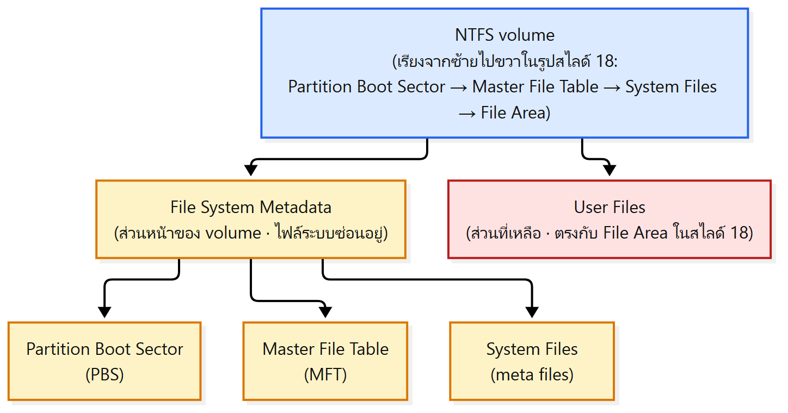
11. Partition Boot Sector (PBS) เก็บอะไร? (Lecture สไลด์ 19)
แก่นตอน format NTFS โปรแกรม format จองพื้นที่ 16 sector แรกไว้ให้ boot sector และ bootstrap code · boot sector แบ่งเป็น 6 field เรียงตาม byte offset
- The boot sector of an NTFS-formatted drive is described in the table
- The format program sets aside the first 16 sectors of an NTFS when formatting it for the boot sector and the bootstrap code
| Byte Offset | Field Length | Field Name |
|---|---|---|
| 0x00 | 3 bytes | Jump Instruction |
| 0x03 | LONGLONG | OEM ID |
| 0x0B | 25 bytes | BPB |
| 0x24 | 48 bytes | Extended BPB |
| 0x54 | 426 bytes | Bootstrap Code |
| 0x01FE | WORD | End of Sector Marker |
ไล่ offset ทีละขั้น (offset ถัดไป = offset เดิม + ความยาว field; LONGLONG = 8 bytes, WORD = 2 bytes):
- 0x00 + 3 = 0x03 ✔
- 0x03 + 8 = 11 = 0x0B ✔
- 0x0B (11) + 25 = 36 = 0x24 ✔
- 0x24 (36) + 48 = 84 = 0x54 ✔
- 0x54 (84) + 426 = 510 = 0x1FE ✔
- 0x1FE (510) + 2 = 512 bytes = จบ sector พอดี
ℹ️ ขนาด LONGLONG = 8 และ WORD = 2 ไม่ได้เขียนในสไลด์ แต่เป็นค่าที่ทำให้ offset ในตารางต่อกันพอดี (ตรวจด้วย node แล้วรวมได้ 512)
12. MFT ทำงานยังไง และกันข้อมูลเสียยังไง? (Lecture สไลด์ 20–23)
แก่นMFT มี record ของทุกไฟล์ · 16 record แรกจองไว้ให้ข้อมูลพิเศษ (record 1 = MFT เอง, record 2 = MFT mirror, record 3 = log file) · ถ้า record แรกเสียจะไปใช้ MFT mirror · ไฟล์เล็ก ≤ 1500 bytes เก็บใน record ได้ทั้งไฟล์
12.1 Master File Table (MFT)
- MFT เป็น unique file ที่มี record ของทุกไฟล์ บน NTFS drive
- NTFS กัน 16 record แรก ของตารางไว้สำหรับ special data
- entry แรก = อธิบายตัว master file table เองโดยละเอียด
- ตามด้วย entry ของ MFT mirror
- ถ้า record แรกของ MFT เสีย (corrupted) → NTFS อ่าน record ที่สอง เพื่อหาไฟล์ MFT mirror ซึ่ง record แรกของ mirror เหมือนกับ record แรกของ MFT ทุกประการ
- Boot sector เก็บตำแหน่งของ data segments ของ MFT และ MFT mirror
- กึ่งกลางทางตรรกะของดิสก์ (logical center of the disk) มี สำเนาของ boot sector
💡 เปรียบเหมือนสมุดรายชื่อห้องสมุด: MFT คือสมุดรายชื่อหนังสือทุกเล่ม และห้องสมุดถ่ายสำเนาหน้าแรกเก็บไว้อีกที่ (MFT mirror) ถ้าหน้าแรกขาดก็เปิดสำเนาแทน
12.2 รูป MFT กับ extent
รูปแสดง Master File Table เป็นแถว record เรียงจากบนลงล่าง: MFT, (แถวว่าง), Log file record, ..., Small file record, (แถวว่าง), Large file record, Small directory record, ...
- record MFT มีเส้นออกไปที่ Extent 2 ชุด
- Log file record ชี้ไปที่ Extent 1 ชุด
- Large file record ชี้ไปที่ Extent 1, Extent 2, Extent 3
- Small file record และ Small directory record ไม่มีเส้นออกไป extent
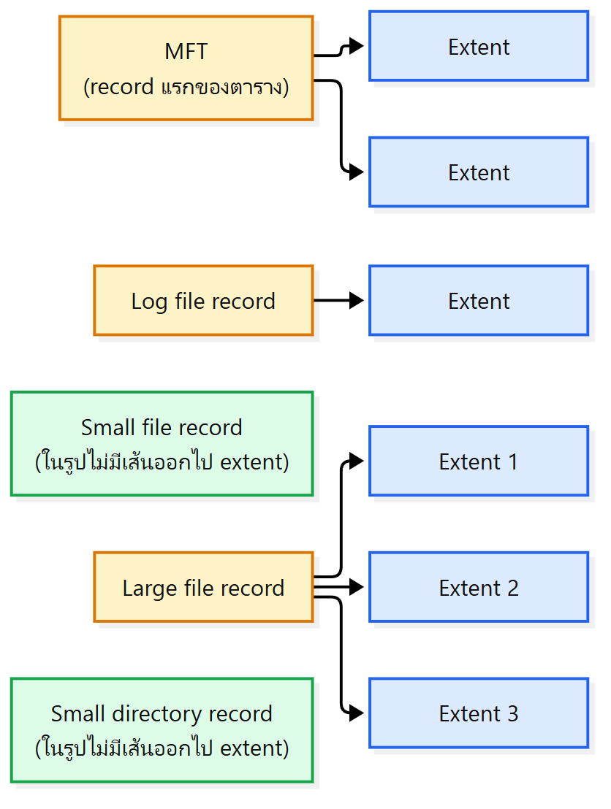
💡 อ่านรูปนี้คู่กับสไลด์ 23: ไฟล์/โฟลเดอร์เล็กอยู่ใน record ได้ทั้งก้อน จึงไม่มีเส้นออกไป extent ส่วนไฟล์ใหญ่ต้องเก็บข้อมูลเป็นหลายช่วง (extent) ข้างนอก
12.3 รูป NTFS FILE SYSTEM
- Master File Table (แถบสีแดง) มีแถวที่ป้ายว่า 1024 ลากเส้นไปที่ File Entry ใน Directory Data
- จาก File Entry มีเส้นวนกลับไปที่ record อีกแถวใน MFT และจาก record นั้นมีเส้นไปที่ File
- มีกล่อง Bitmap และกล่องคำพูด "0,1 Marking for Each Cluster" (บิตแมปใช้ 0/1 ทำเครื่องหมายแต่ละ cluster)
- แถวล่างคือการวางบนดิสก์: ... MFT ... MFT Mirror ... Directory ... File
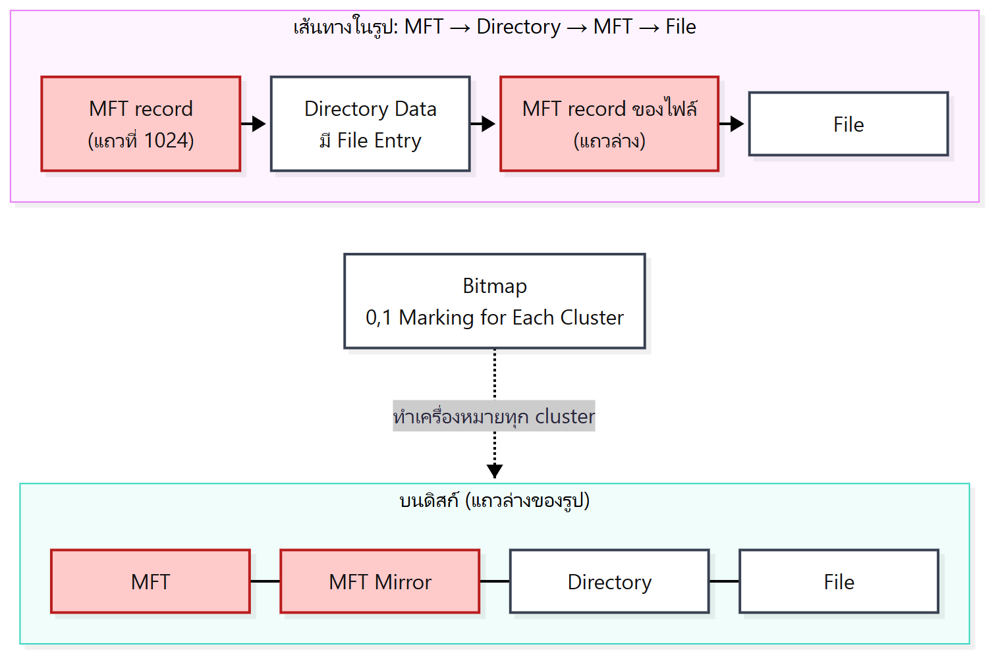
⚠️ สไลด์ 22 เป็นรูปล้วนไม่มีคำอธิบาย สรุปนี้บรรยายตามเส้นที่เห็นในรูปเท่านั้น สไลด์ไม่ได้บอกว่าเลข 1024 หมายถึงอะไร
12.4 Log file และไฟล์เล็กใน MFT
- The log file ใช้สำหรับ file recovery และเป็น record ที่ 3 ของ MFT
- แต่ละ file entry ได้พื้นที่เฉพาะ ใน MFT
- attributes ของไฟล์ ถูกเขียนลงพื้นที่ที่กำหนดไว้ใน MFT
- ไฟล์และ directory ขนาดเล็ก ≤ 1500 bytes เก็บ อยู่ใน MFT record ได้ทั้งหมด
| ลำดับ record ใน MFT | คืออะไร | ที่มา |
|---|---|---|
| ที่ 1 | MFT (อธิบายตัวเอง) | สไลด์ 20 |
| ที่ 2 | MFT mirror | สไลด์ 20 |
| ที่ 3 | Log file (ใช้กู้ไฟล์) | สไลด์ 23 |
| 16 record แรก | จองไว้ให้ special data | สไลด์ 20 |
13. NTFS metadata / system files คืออะไร? (Lecture สไลด์ 24)
แก่นNTFS มี system file หลายไฟล์ที่ซ่อนอยู่ ใช้สร้าง file system และเก็บ metadata · โปรแกรม Format เป็นตัวเขียนลง volume
- Several system files เป็นส่วนหนึ่งของ NTFS และ ถูกซ่อน (hidden) ทั้งหมด บน NTFS drive
- System file = ไฟล์ที่ file system ใช้ implement ตัว file system และเก็บ metadata ของมัน
- The Format utility writes system files to the volume (system file ถูกเขียนตอน format)
- รูป: volume แบ่งเป็น File System Metadata | User Files และ File System Metadata ขยายเป็น Partition Boot Sector | Master File Table | System Files (ดูรูปในข้อ 10.2)
- ที่มา: recoverit.wondershare.com/file-system/ntfs-file-system.html
💡 metadata = "ข้อมูลเกี่ยวกับข้อมูล" เช่นรายชื่อไฟล์ ตำแหน่ง ขนาด ไม่ใช่เนื้อไฟล์เอง
14. Windows Registry คืออะไร มีโครงสร้างยังไง? (Lecture สไลด์ 25–27)
แก่นRegistry = ฐานข้อมูลแบบลำดับชั้นที่เก็บการตั้งค่าระดับล่างของ Windows และโปรแกรม · โครงสร้างซ้อนเหมือนโฟลเดอร์: subtree (ราก, มี 5 ตัว HKEY_...) → key → subkey
14.1 Registry คืออะไร
- hierarchical database ที่เก็บ low-level settings ของ Windows OS และของ โปรแกรมที่เลือกใช้ registry
- ผู้ใช้ registry: kernel, device drivers, services, Security Accounts Manager (SAM), user interfaces
- ให้เข้าถึง counters สำหรับ profiling system performance ได้ด้วย
- พูดอีกแบบ: registry เก็บ ข้อมูล, การตั้งค่า, ตัวเลือก และค่าอื่น ๆ ของโปรแกรมและ hardware ที่ติดตั้งบน Windows ทุกเวอร์ชัน
- ตัวอย่าง: ติดตั้งโปรแกรมใหม่ → มี subkey ใหม่ ถูกเพิ่มเข้า registry ซึ่งเก็บ ตำแหน่งโปรแกรม, เวอร์ชัน และวิธีเริ่มโปรแกรม
💡 เปรียบเหมือนสมุดตั้งค่ากลางของทั้งเครื่อง: OS, driver, service และโปรแกรมต่าง ๆ มาเปิดสมุดเล่มเดียวกันนี้เพื่ออ่าน/จดค่าของตัวเอง แบ่งหมวดเป็นชั้น ๆ เหมือนโฟลเดอร์
14.2 เปิด Registry Editor
- At the command prompt, search for Registry editor (สไลด์ไม่ได้ระบุคำสั่งที่พิมพ์)
- รูปหน้าต่าง Registry Editor (เมนู File, Edit, View, Favorites, Help) ช่อง path แสดง
Computer\HKEY_LOCAL_MACHINE\SYSTEM\CurrentControlSet\Control - ป้ายในรูปชี้ 3 ระดับ: subtrees (เช่น HKEY_CURRENT_USER), keys (เช่น SECURITY ใต้ HKEY_LOCAL_MACHINE), subkeys (เช่น CurrentControlSet ใต้ SYSTEM)
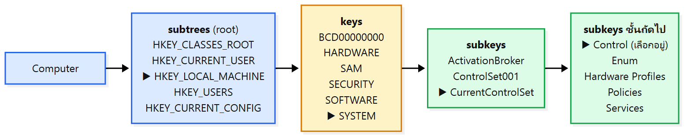
ช่องขวาของ Registry Editor แสดงค่าใน Control เป็น 3 คอลัมน์ Name / Type / Data เช่น
| Name | Type | Data |
|---|---|---|
| (Default) | REG_SZ | (value not set) |
| BootDriverFlags | REG_DWORD | 0x0000001c (28) |
| CurrentUser | REG_SZ | USERNAME |
| EarlyStartServices | REG_MULTI_SZ | RpcSs Power BrokerInfrastructure System |
| FirmwareBootD... | REG_SZ | multi(0)disk(0)rdisk(0)partition(2) |
| LastBootShutdo... / LastBootSuccee... | REG_DWORD | 0x00000001 (1) |
| PreshutdownOr... | REG_MULTI_SZ | UsoSvc DeviceInstall gpsvc trustedinstalle... |
| SvcHostSplitThr... | REG_DWORD | 0x00380000 (3670016) |
| SystemBootDevi... | REG_SZ | multi(0)disk(0)rdisk(0)partition(4) |
| SystemStartOpti... | REG_SZ | NOEXECUTE=OPTIN NOVGA |
| WaitToKillServic... | REG_SZ | 5000 |
ℹ️ ชื่อที่ลงท้าย "..." ถูกตัดในรูปสไลด์ สไลด์ไม่ได้อธิบายความหมายของแต่ละ Type
14.3 Structure of Windows Registry
- registry ส่วนใหญ่เป็น ภาชนะซ้อนกัน (nested containers) เรียกว่า subtrees, keys, subkeys ซึ่ง เหมือนโฟลเดอร์
- Subtrees = ราก (root) หรือการแบ่งหลักของ registry
- ชื่อ subtree มี 5 ตัว:
- HKEY_CLASSES_ROOT
- HKEY_CURRENT_USER
- HKEY_LOCAL_MACHINE
- HKEY_USERS
- HKEY_CURRENT_CONFIG
⚠️ สไลด์ไม่ได้อธิบายหน้าที่ของแต่ละ HKEY — ข้อสอบน่าจะถามแค่ชื่อ / จำนวน (5) / ลำดับชั้น subtree → key → subkey
15. สร้าง user account ใน Windows ยังไง? (Lecture สไลด์ 28–31)
แก่นStart > Settings > Accounts > Family & other users > (Other users) Add someone else to this PC → ได้ user ใหม่ เช่น "test" แบบ Local account
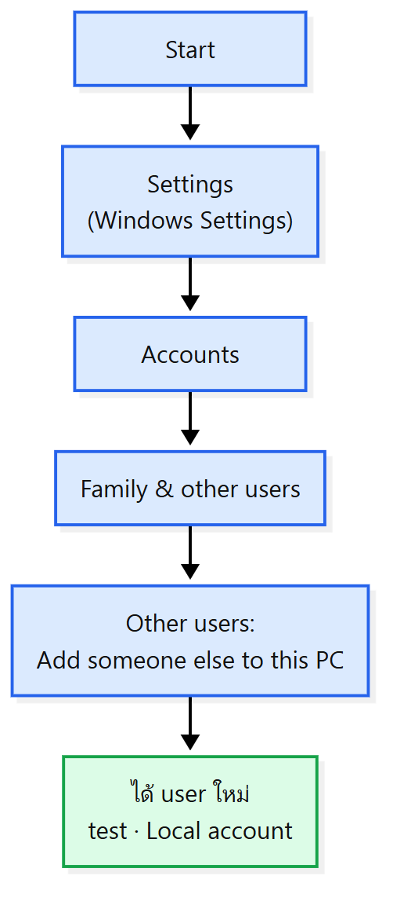
| สไลด์ | หน้าจอ | สิ่งที่เห็น / ทำ |
|---|---|---|
| 28 | Windows Settings | หมวด: System, Devices, Phone, Network & Internet, Personalization, Apps, Accounts (Your accounts, email, sync, work, family), Time & Language, Gaming, Ease of Access, Search, Privacy, Update & Security → เลือก Accounts |
| 29 | Accounts > Your info | เมนูซ้าย: Your info, Email & accounts, Sign-in options, Access work or school, Family & other users, Sync your settings · หน้า Your info แสดงบัญชีปัจจุบันเป็น Local Account, Administrator และลิงก์ "Sign in with a Microsoft account instead" |
| 30 | Family & other users | ส่วน Your family – "Add your family so everybody gets their own sign-in and desktop..." ปุ่ม Add a family member · ส่วน Other users – "Allow people who are not part of your family to sign in with their own accounts. This won't add them to your family." ปุ่ม Add someone else to this PC |
| 31 | หลังสร้างเสร็จ | ใต้ Other users มี test – Local account เพิ่มขึ้นมา |
- คำสั่งในสไลด์ 29–31: "Select Start > Settings > Accounts and then select Family & other users."
- ข้อความสีแดงในรูป "We couldn't connect to Microsoft family right now..." เป็นข้อความแจ้งเตือนของเครื่องตัวอย่าง
⚠️ Add a family member (ส่วน Your family) ≠ Add someone else to this PC (ส่วน Other users) — การสร้าง user "test" ในสไลด์ใช้ Other users ซึ่ง ไม่ถูกเพิ่มเข้า family
16. Permission ของไฟล์/โฟลเดอร์มีกี่แบบ และตั้งยังไง? (Lecture สไลด์ 32–36)
แก่นWindows มี standard permission 6 แบบ (Full Control, Modify, Read & Execute, List Folder Contents, Read, Write) · ตั้งผ่าน Properties > Security: Edit → Add user → ติ๊ก Allow/Deny → Apply → OK
16.1 Permission 6 แบบ
There are six standard permission types which apply to files and folders in Windows:
- Full Control
- Modify
- Read & Execute
- List Folder Contents
- Read
- Write
Full Control (กรอบแดงในสไลด์) — Permits the user(s) to:
- view file name and subfolders (ดูชื่อไฟล์และโฟลเดอร์ย่อย)
- navigate to subfolders (เข้าไปในโฟลเดอร์ย่อย)
- view data in the folder's files (ดูข้อมูลในไฟล์)
- add files and subfolders to the folder (เพิ่มไฟล์/โฟลเดอร์ย่อย)
- change the folder's files (แก้ไฟล์)
- delete the folder and its files (ลบโฟลเดอร์และไฟล์)
- change permissions (เปลี่ยนสิทธิ์)
- take ownership of the folder and its files (ยึดความเป็นเจ้าของ)
⚠️ สไลด์อธิบายรายละเอียดแค่ Full Control อีก 5 แบบมีแค่ชื่อ — จุดเด่นของ Full Control ที่ควรจำคือ change permissions และ take ownership
💡 เทียบ L5 (Linux): Linux มีแค่ r / w / x ต่อ owner / group / others ส่วน Windows มี 6 ระดับ และกำหนดให้ทีละ user หรือ group ได้
16.2 ตัวอย่างโฟลเดอร์ที่จะตั้งสิทธิ์
- File Explorer ที่ path This PC › Desktop › ITDS212 Comp System Lab › Lectures and Labs
- ในโฟลเดอร์มี: Labs, Lectures (เลือกอยู่ — เป็นโฟลเดอร์ที่จะตั้งสิทธิ์), apache_w11, apt-install, Lab 9 Memory, Lecture 9 Memory, page1-695px-Unix_command_cheatsheet, temp doc for labs, Unix_command_cheatsheet, virtualbox
16.3 ขั้นตอนตั้งสิทธิ์
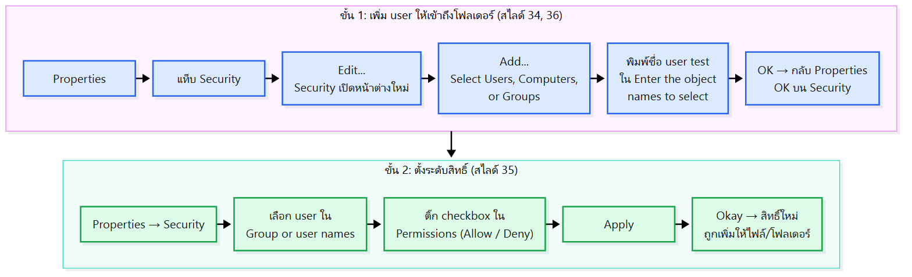
ขั้น 1: เพิ่ม user ให้มีสิทธิ์เข้าถึงโฟลเดอร์ (สไลด์ 34 และ 36)
- เปิด Properties dialog box
- เลือกแท็บ Security
- คลิก Edit → หน้าต่าง security เปิดเป็น หน้าต่างใหม่
- คลิก Add... → มี dialog Select Users, Computers, or Groups ขึ้นมา
- ในช่อง Enter the object names to select พิมพ์ชื่อ user ("test") ที่จะให้เข้าถึงโฟลเดอร์
- คลิก OK → กลับมาที่ Properties dialog
- คลิก OK บนหน้าต่าง Security
- ทำต่อที่ "Setting Permissions" (ขั้น 2)
ขั้น 2: ตั้งระดับสิทธิ์ (สไลด์ 35)
- เปิด Properties → แท็บ Security — ส่วนบนของ dialog แสดง users/groups ที่เข้าถึงไฟล์หรือโฟลเดอร์นี้ได้
- ในส่วน Group or user name เลือก user ที่จะตั้งสิทธิ์
- ในส่วน Permissions ใช้ checkbox เลือกระดับสิทธิ์ที่เหมาะสม
- คลิก Apply
- คลิก Okay → สิทธิ์ใหม่ถูกเพิ่มให้ไฟล์หรือโฟลเดอร์
สิ่งที่เห็นในรูป dialog
| สไลด์ | หน้าต่าง | รายละเอียด |
|---|---|---|
| 34 | Lectures Properties แท็บ Security | แท็บ: General, Sharing, Security, Previous Versions, Customize · Group or user names: SYSTEM, บัญชีเจ้าของเครื่อง, Administrators · "To change permissions, click Edit." · Permissions for SYSTEM: ติ๊ก Allow ครบทั้ง 6 แบบ · ปุ่ม Advanced ("For special permissions or advanced settings, click Advanced.") |
| 35, 36 | Permissions for Lectures | Group or user names มี test เพิ่มเข้ามา · ปุ่ม Add... / Remove · Permissions for test: Allow ติ๊กที่ Read & execute, List folder contents, Read ส่วน Full control และ Modify ไม่ติ๊ก (แถว Write ถูกตัดขอบในรูป) · มีคอลัมน์ Allow และ Deny |
⚠️ สไลด์ 36 ใช้ข้อความชุดเดียวกับสไลด์ 34 (ขั้น Add user) แต่รูปเป็นหน้าต่าง Permissions for Lectures ที่เลือก user test แล้ว (เหมือนสไลด์ 35)
17. ดูและ kill process ใน Windows ยังไง? (Lecture สไลด์ 37)
แก่นเปิด Task Manager จาก Start → คลิกขวาที่หัวคอลัมน์เพื่อเลือกข้อมูลที่จะแสดง (Type, PID, CPU ฯลฯ) → kill process ด้วยคลิกขวาที่โปรแกรมแล้วเลือก End Task
Viewing Process (ตามเลขในสไลด์):
- (1) คลิกไอคอน Start แล้ว (2) คลิก Task Manager
- ใน Task Manager คลิกขวา (3) ที่ชื่อคอลัมน์ แล้วเลือกรายละเอียดที่ต้องการ เช่น (4) Type, PID, ..., CPU ฯลฯ
- Kill process → คลิกขวาที่โปรแกรมนั้น แล้วเลือก "End Task"
สิ่งที่เห็นในรูป Task Manager
- แท็บ Processes · แถบเครื่องมือ: Run new task, End task, Efficiency mode, View
- เมนูเลือกคอลัมน์ (คลิกขวาที่หัวคอลัมน์ Name): Type, Status, Publisher, PID, Process name, Command line, CPU, Memory, Disk, Network, GPU, GPU engine, Power usage, Power usage trend, Resource values
- หัวตารางแสดงภาพรวม: CPU 3%, Memory 44%, Disk 0%
- กลุ่ม Apps (4): Microsoft Edge (9), Microsoft Store (2), MyASUS (2), Task Manager · กลุ่ม Background processes (71) เช่น Antimalware Service Executable, Application Frame Host, ASUS App Service ฯลฯ
💡 เทียบ L8–L9 (Linux): Task Manager ≈
top/htopแบบ GUI · คอลัมน์ PID คือเลข process เหมือนในps· End Task ≈kill
⚠️ สไลด์พิมพ์ "Click Start icon them" — หมายถึง then
ภาค Lab
18. Lab 14 ต้องทำอะไร และส่งอะไร? (Lab หน้า 1–4)
แก่นทำงาน admin Windows ทุกอย่างตามสไลด์ Lecture เก็บผลเป็น PDF ไฟล์เดียว ตั้งชื่อ 6887xxx_lab14.pdf ส่ง MyCourses ภายในเที่ยงคืนวันที่ November 12, 2026
18.1 Objectives (Lab หน้า 1–2)
- Lab #14 (ITDS212 Computer System Lab, November 12, 2026) — เรียนรู้:
- วิธีการบริหารจัดการผู้ใช้งานเบื้องต้น
- วิธีการบริหารระบบไฟล์เบื้องต้น
- วิธีการติดตั้ง access permission
18.2 What to Submit (Lab หน้า 3)
| หัวข้อ | รายละเอียด |
|---|---|
| ทำอะไร | Do the windows operating system admins as said on the lecture slides |
| เก็บผล | Save the outputs in one PDF file |
| ส่งที่ | link บน MyCourses |
| ชื่อไฟล์ | 6887xxx_lab14.pdf (xxx = รหัสนักศึกษาของตัวเอง) |
| กำหนดส่ง | November 12, 2026 at midnight |
18.3 What to Do in the Lab (Lab หน้า 4)
งาน 6 ข้อ และส่วนของ Lecture ที่ใช้ทำ:
| # | งานใน Lab | ทำตาม Lecture | ผลที่ควรเก็บใส่ PDF |
|---|---|---|---|
| 1 | Explore the volume, folder and files บนเครื่องที่ใช้ในแลป | ข้อ 6 (สไลด์ 9–10) | ภาพ File Explorer แสดง drive / folder / file |
| 2 | Explore Disk Management | ข้อ 9 (สไลด์ 16) | ภาพหน้าต่าง Disk Management (volume, file system, capacity, partition) |
| 3 | Explore the Windows Registry and its structure | ข้อ 14 (สไลด์ 25–27) | ภาพ Registry Editor ที่เห็น subtree / key / subkey |
| 4 | Set up the folder/file permission on the folder of your own | ข้อ 16 (สไลด์ 32–36) | ภาพ Properties > Security ก่อน/หลังเพิ่ม user และติ๊กสิทธิ์ |
| 5 | View the current processes via the Task Manager | ข้อ 17 (สไลด์ 37) | ภาพ Task Manager ที่เปิดคอลัมน์เพิ่ม (เช่น PID, Type) |
| 6 | Create a new user on your own machine at home | ข้อ 15 (สไลด์ 28–31) | ภาพ Family & other users ที่มี user ใหม่ |
ℹ️ คอลัมน์ "ผลที่ควรเก็บ" เป็นการจับคู่จากหน้าจอที่สไลด์ Lecture แสดง — Lab บอกแค่ให้ "save the outputs in one PDF file" ไม่ได้กำหนดว่าต้องแคปหน้าไหน
⚠️ ข้อ 6 ให้ทำ ที่เครื่องตัวเองที่บ้าน (at home) ไม่ใช่เครื่องในแลป · ข้อ 4 ให้ตั้งสิทธิ์บน โฟลเดอร์ของตัวเอง
ℹ️ ทั้ง Lecture และ Lab ไม่มีคำสั่ง PowerShell / cmd ให้รัน ทุกขั้นทำผ่าน GUI (Settings, Properties, Disk Management, Registry Editor, Task Manager)
คำศัพท์สำคัญ
| คำศัพท์ | ความหมาย | จำง่าย ๆ ว่า |
|---|---|---|
| Boot loader / boot manager | โปรแกรมเล็ก ๆ ที่โหลด OS เข้า memory | คนเปิดประตูให้ OS เข้าบ้าน |
| POST | Power On Self Test ช่วงเครื่องตรวจตัวเองตอนเปิด | กด F12 ตอนนี้เพื่อเลือกอุปกรณ์บูต |
| User mode / Kernel mode | 2 ส่วนหลักของสถาปัตยกรรม Windows (NT) | ชั้นลูกค้า / ห้องเครื่อง |
| HAL | Hardware Abstraction Layer ชั้นล่างสุดของ kernel ติดกับ hardware | ตัวแปลงหัวปลั๊ก |
| NTDLL.DLL | แถบล่างสุดของ user mode ที่ทุกโปรแกรมผ่านก่อนเข้า kernel | ประตูทางออกของ user mode |
| Preemptive, reentrant | คุณสมบัติ multitasking ของ Windows NT | NT = layered + preemptive + reentrant |
| Volume | กลุ่มของ directory และ file | ตู้เอกสารทั้งตู้ |
| Cluster | หน่วยจัดสรรพื้นที่ (allocation unit) ของดิสก์ | FAT16 มีได้ 65,536 อัน |
| FAT | File Allocation Table — ตารางบอก cluster ถัดไปของไฟล์ (Microsoft, 1977) | ป้ายบอกทางล่าสมบัติ |
| EOF | End Of File — จุดจบของสายโซ่ cluster | FFFF ในรูปล่างสไลด์ 14 ก็อยู่ท้ายสาย |
| NTFS | New Technology File System | auto repair + compression |
| MFT | Master File Table — มี record ของทุกไฟล์ใน NTFS | สมุดรายชื่อทุกไฟล์ |
| MFT mirror | สำเนาที่ record แรกเหมือน record แรกของ MFT | ใช้เมื่อ record แรกเสีย |
| PBS | Partition Boot Sector — จอง 16 sector แรกให้ boot sector + bootstrap code | 6 field รวม 512 bytes |
| Extent | ช่วงพื้นที่ข้อมูลที่ record ใน MFT ชี้ออกไป (รูปสไลด์ 21) | ไฟล์ใหญ่มีหลาย extent |
| Metadata / System file | ไฟล์ซ่อนที่ file system ใช้เก็บ metadata เขียนตอน Format | ข้อมูลเกี่ยวกับข้อมูล |
| Registry | ฐานข้อมูลแบบลำดับชั้นเก็บ low-level settings | สมุดตั้งค่ากลางของเครื่อง |
| Subtree / Key / Subkey | ชั้นของ registry (ราก → ลูก → หลาน) เหมือนโฟลเดอร์ | HKEY_ = subtree |
| Local account | บัญชีที่สร้างในเครื่อง (เช่น user test) | ไม่ใช่ Microsoft account |
| Full Control | สิทธิ์สูงสุด รวม change permissions + take ownership | 1 ใน 6 standard permissions |
| Task Manager | เครื่องมือดู process เลือกคอลัมน์ (PID, CPU...) และ End Task | top + kill ของ Windows |
สรุปท้ายบท / จุดที่มักออกสอบ
- Windows 1.0 = Nov 1985 · Windows 11 = October 2021 (ทั้งหมด 13 รุ่นในสไลด์)
- F8 = Windows Boot Manager · F12 = Boot Menu เลือกอุปกรณ์บูตระหว่าง POST · boot loader = boot manager
- Windows NT = layered (user mode + kernel mode), preemptive, reentrant multitasking, ใช้ได้กับ uni- และ multiprocessor
- Volume / Directory (hierarchical) / File (logical grouping of related data)
- FAT พัฒนาโดย Microsoft 1977 · ตระกูล FAT = FAT12, FAT16, FAT32, exFAT · Windows มี 3 file system = NTFS, FAT32, FAT16 (สไลด์ 11)
- ตารางเทียบ: FAT32 volume 32GB / ไฟล์ 4GB / ไม่มี fault tolerance · NTFS 16TB / 16TB / cluster 4KB / auto repair / compression / Mac read-only · exFAT 128 PB / cluster 32MB / fault tolerance ถ้าเปิด TFAT
- FAT16 = 16 bit → 65,536 clusters
- ไล่ FAT: entry บอก cluster แรก → ช่อง FAT N เก็บ cluster ถัดไป → จบที่ EOF (file.txt: 50→51→52→160→130)
- NTFS = PBS + MFT + meta files · MFT คือ central structure · เก็บ หลายสำเนา ของส่วนสำคัญ
- PBS: format จอง 16 sector แรก · field: Jump Instruction (0x00, 3) → OEM ID (0x03) → BPB (0x0B, 25) → Extended BPB (0x24, 48) → Bootstrap Code (0x54, 426) → End of Sector Marker (0x01FE, WORD)
- MFT: 16 record แรก จองไว้ · record 1 = MFT · record 2 = MFT mirror · record 3 = log file (file recovery) · record แรกเสีย → ใช้ mirror · สำเนา boot sector อยู่กลางดิสก์ (logical center) · ไฟล์/dir ≤ 1500 bytes อยู่ใน MFT record ได้ทั้งหมด
- System files ของ NTFS ซ่อนทั้งหมด · Format utility เป็นผู้เขียน
- Registry = hierarchical database · ผู้ใช้: kernel, drivers, services, SAM, UI · subtrees → keys → subkeys · 5 subtree: HKEY_CLASSES_ROOT, HKEY_CURRENT_USER, HKEY_LOCAL_MACHINE, HKEY_USERS, HKEY_CURRENT_CONFIG
- สร้าง user: Start > Settings > Accounts > Family & other users > Add someone else to this PC
- Permission 6 แบบ: Full Control, Modify, Read & Execute, List Folder Contents, Read, Write · ตั้งที่ Properties > Security > Edit > Add > ติ๊ก > Apply > OK
- Process: Task Manager → คลิกขวาหัวคอลัมน์เลือก Type/PID/CPU → คลิกขวาโปรแกรม → End Task
- Lab: PDF ไฟล์เดียว 6887xxx_lab14.pdf ส่ง MyCourses ภายใน November 12, 2026 เที่ยงคืน
คู่ที่มักสับสน
| A | B | ต่างกันตรงไหน |
|---|---|---|
| F8 | F12 | F8 = เข้า Windows Boot Manager ตอนเครื่องเริ่ม · F12 = Boot Menu เลือกอุปกรณ์บูตระหว่าง POST |
| User mode | Kernel mode | user = applications, subsystems, DLL, NTDLL · kernel = executive/manager, kernel, drivers, HAL |
| Integral subsystems | Environment subsystems (NT) | integral = Workstation service, Server service, Security · environment = Win32, POSIX, OS/2 |
| Volume | Directory | volume = กลุ่มของ directory+file ทั้งก้อน · directory = กลุ่มแบบ ลำดับชั้น ซ้อนได้ |
| Windows มี 3 FS (NTFS, FAT32, FAT16) | ตารางเทียบ (FAT32, NTFS, exFAT) | สไลด์ 11 กับ 12 ใช้ชุดต่างกัน ตอบตามที่โจทย์อ้าง |
| FAT32 | NTFS | FAT32: 32GB/4GB, ไม่มี fault tolerance, ไม่บีบอัด, เข้ากันได้กว้าง · NTFS: 16TB/16TB, auto repair, บีบอัดได้, Mac อ่านได้อย่างเดียว |
| Directory entry | ช่องใน FAT | entry = ชื่อ + ขนาด + cluster แรก · ช่อง FAT N = cluster ถัดไป หลัง N |
| EOF | 0000 (สไลด์ 14) | EOF/FFFF อยู่ท้ายสายของไฟล์ · 0000 ที่ช่อง 9 ไม่มีไฟล์ชี้มา |
| 16 sectors แรก (PBS) | 16 records แรก (MFT) | sector = format จองให้ boot sector + bootstrap code · record = MFT จองให้ special data |
| MFT | MFT mirror | MFT = ตารางหลัก · mirror = สำเนาที่ record แรกเหมือนกัน ใช้เมื่อ record แรกของ MFT เสีย |
| MFT mirror | สำเนา boot sector | mirror = สำเนา MFT · สำเนา boot sector อยู่ที่ logical center of the disk |
| Record 2 | Record 3 ของ MFT | record 2 = MFT mirror · record 3 = log file (file recovery) |
| Small file record | Large file record (สไลด์ 21) | ไฟล์เล็ก (≤1500 bytes) อยู่ใน record ทั้งหมด · ไฟล์ใหญ่ชี้ออกไปหลาย extent |
| Subtree | Key / Subkey | subtree = ราก (HKEY_ 5 ตัว) · key = ชั้นถัดมา (เช่น SYSTEM) · subkey = ชั้นลึกลงไป (เช่น CurrentControlSet) |
| Add a family member | Add someone else to this PC | family = สมาชิกครอบครัว · other users = คนนอกครอบครัว ไม่ถูกเพิ่มเข้า family (สไลด์สร้าง test ด้วยอันนี้) |
| Full Control | อีก 5 permission | Full Control เท่านั้นที่ change permissions + take ownership ได้ (ตามรายการในสไลด์) |
| Edit (Security tab) | Advanced | Edit = เปลี่ยนสิทธิ์ / เพิ่ม user · Advanced = special permissions หรือ advanced settings |
| Allow | Deny | 2 คอลัมน์ checkbox ใน Permissions for |